ИСТОРИЯ ВЫЧИСЛИТЕЛЬНОЙ ТЕХНИКИ

- 1. Домеханический этап
- 2. Механический этап
- 3. Электромеханический этап
- 4. Электронный этап
- 5. Заключение
НАЗАД
1. ДОМЕХАНИЧЕСКИЙ ЭТАП
1.1 ПРИМИТИВНЫЕ СРЕДСТВА
Вычислительные способности большинства из нас ограничены. Сложить в уме стоимость нескольких покупок и подсчитать сумму сдачи не так просто, особенно если это расчёт орбиты планеты или координат звезды. Поэтому наряду с развитием теории ученые работали и над проблемой автоматизации вычислений. Но тут, к сожалению, прогресс шел очень медленно.
НАЗАД
1.1.1 СЧЁТ НА ПАЛЬЦАХ
Достоинства счета на пальцах:
1) простота и надежность;
2) компактность;
3) удобство «хранения и транспортировки», то, что он
всегда «под рукой»;
4) работает в привычной системе счисления - десятичной.
Имена числительные во многих языках указывают, что у первобытного человека орудием счета были преимущественно пальцы. Не случайно в древнерусской нумерации единицы называются «перстами», десятки – «составами», а все остальные числа – «сочинениями». Кисть же руки – пясть – синоним и фактическая основа числительного «пять» у многих народов.
От пальцевого счета берет начало пятеричная система счисления (одна рука), десятичная (две руки), двадцатеричная (пальцы рук и ног). У многих народов пальцы рук остаются инструментом счета и на более высоких ступенях развития.
Есть, однако, у пальцевого счета и недостатки. Самый существенный из них неудобство хранения результатов даже в
течение короткого времени. Здесь качество быть всегда под рукой оборачивается своей теневой стороной.
НАЗАД
1.1.2 СЧЁТ НА КАМНЯХ
Чтобы сделать процесс счета более удобным, человек начал использовать вместо пальцев небольшие камни. Он складывал из камней пирамиду и определял, сколько в ней камней, но если число велико, то подсчитать количество камней на глаз трудно. Поэтому первобытный человек стал складывать из камней более мелкие пирамиды одинаковой величины, а из-за того, что на руках десять пальцев, то пирамиду составляли именно десять камней. Разные народы вместо камней использовали разные приспособления – кости, бобы, ракушки.
НАЗАД
1.1.3 НАСЕЧКИ НА ДЕРЕВЕ ИЛИ КОСТИ
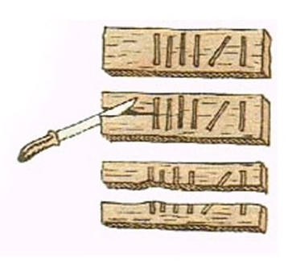Самым древним из таких инструментов считается кость с зарубками. В средние века бирками пользовались для учета и сбора налогов. Бирка разрезалась на две продольные части, одна оставалась у крестьянина, другая – у сборщика налогов. По зарубкам на обеих частях и велся счет уплаты налога, который проверяли складыванием частей бирки.
НАЗАД
1.1.4 УЗЕЛКОВОЕ ПИСЬМО
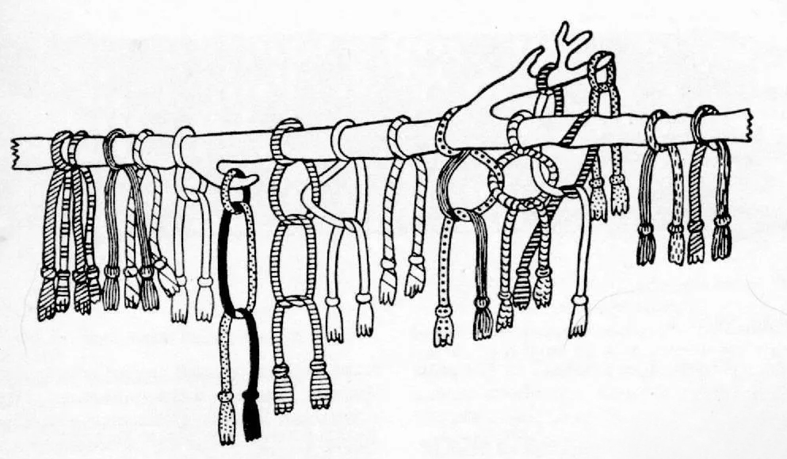Узелковое письмо представляло несколько связанных между собой шерстяных или хлопчатобумажных ниток. Знаками на этих нитях служили узлы иногда с вплетенными в них камнями или цветными ракушками. Наиболее широкое распространение узелковое письмо получило в области Центральных Анд в эпоху расцвета государства инков Туантинсуйу в XV в. н.э.
НАЗАД
1.2 ПЕРВЫЕ ПРИСПОСОБЛЕНИЯ
1.2.1 АБАК
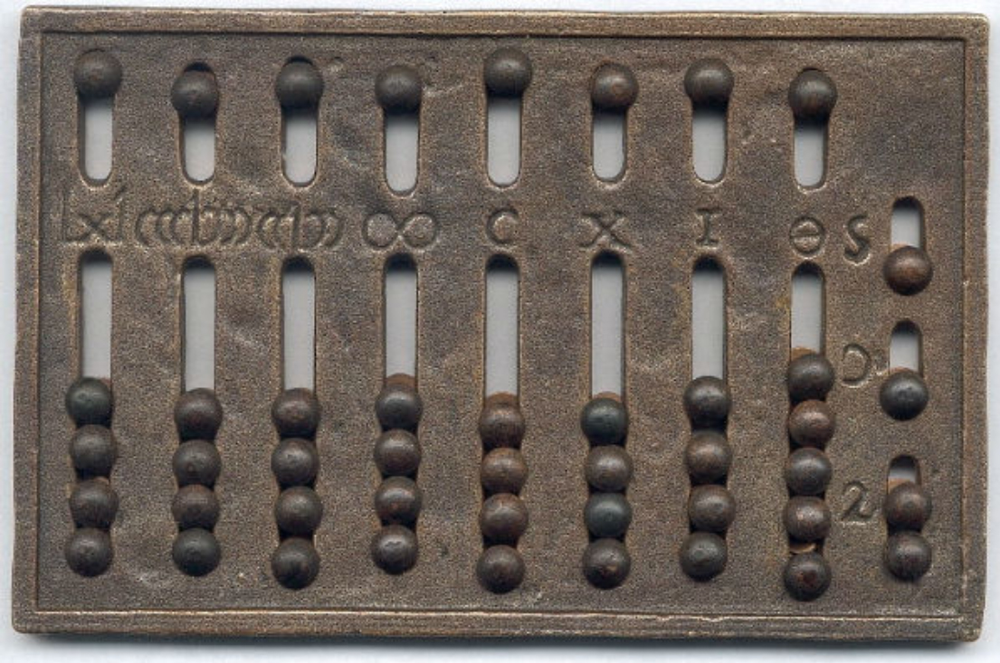Следующий шаг в развитии вычислительных устройств был связан со становлением государств Средиземноморья. Со временем доски для подсчета стали расчерчивать на несколько полос или колонок. Это позволило вести счет с помощью однородных предметов значительно быстрее.
НАЗАД
1.2.2 СЧЁТЫ
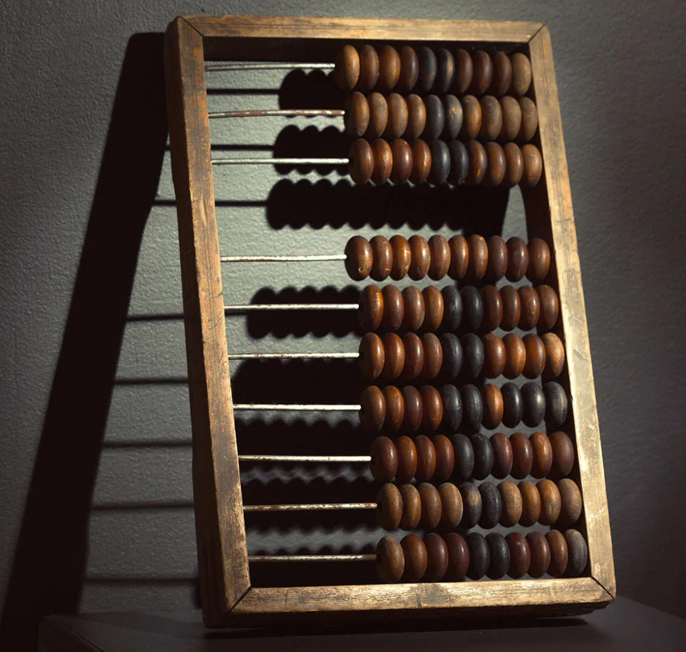На рубеже XVI–XVII вв. появляется русский абак – счеты. Долгое время считалось, что русские счеты ведут свое происхождение от китайского суаньпаня. Лишь в начале 60-х гг. XX столетия ученый И. Г. Спасский доказал русское происхождение этого счетного прибора. Два ящичка соединены между собой на петлях и раскрываются в виде книги. Вся шкатулка собрана из пластинок и брусков слоновой кости, соединенных серебряными гвоздиками. Внутри и снаружи шкатулка украшена орнаментом, костяшками служат бусы из красного и черного стекла с белыми разводами. В начале XVIII в. счеты уже приняли вид, существующий и поныне.
НАЗАД
1.3 ПЕРВЫЕ ПРИБОРЫ
1.3.1 СЧЁТНЫЕ ПАЛОЧКИ НЕПЕРА
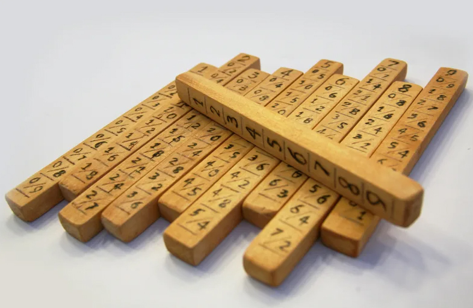Они выполнялись в виде прямоугольных брусков, разделенных на десять квадратов. Каждый квадрат, в свою очередь, кроме самого верхнего, делился по диагонали на две части, в каждой из которых в определенном порядке записывались числа. Самый верхний квадрат содержал всего одну цифру. В набор входил еще один брусок, поделенный также на десять частей. Верхний квадрат такого бруска оставался пустым, а в нижние записывались по порядку числа от единицы до девяти. На этом инструменте можно было извлекать квадратные и кубические корни, умножать и делить большие числа.
НАЗАД
2. МЕХАНИЧЕСКИЙ ЭТАП
2.1 МАШИНА ЛЕОНАРДО ДА ВИНЧИ
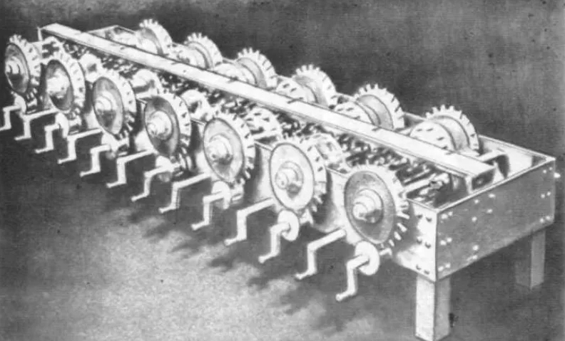Основу машины по описанию составляют стержни, на которые крепится два зубчатых колеса, большее с одной стороны стержня, а меньшее – с другой. В 1969 г. по чертежам Леонардо да Винчи американская фирма IBM по производству компьютеров построила работоспособную машину. Специалисты воспроизвели машину в металле и убедились в полной состоятельности идеи. Это был первый цифровой сумматор, прообраз будущего электронного сумматора – важнейшего элемента современных ЭВМ.
НАЗАД
2.2 МАШИНА В. ШИККАРДА
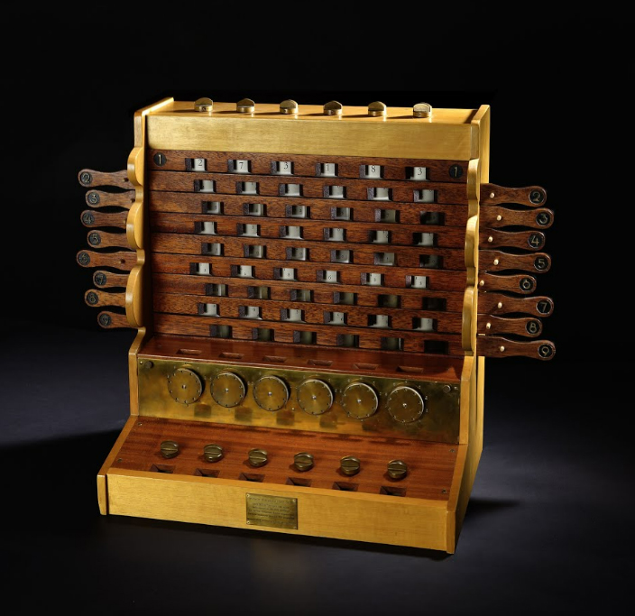В. Шиккард разработал счетную машину для суммирования и умножения шестиразрядных десятичных чисел. Машина Шиккарда состояла из трех частей: суммирующего устройства, множительного устройства и механизма для записи промежуточных результатов. Палец служил для передачи десятка в следующий разряд и после полного оборота шестерни поворачивал шестерню следующего разряда на 1/10 оборота, что соответствовало сложению с единицей.
НАЗАД
2.3 СУММИРУЮЩАЯ МАШИНА Б. ПАСКАЛЯ
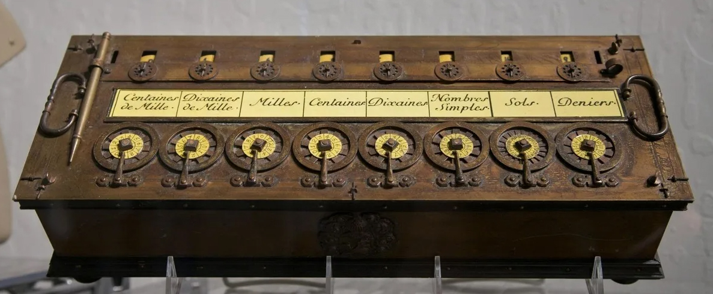В 1642 г. Б. Паскаль сконструировал первый механический вычислитель под названием «Паскалина», позволяющий складывать и вычитать числа. Для выполнения арифметических операций Паскаль заменил поступательное перемещение костяшек в абаковидных инструментах на вращательное движение оси (колеса). Таким образом, в его машине сложению чисел соответствовало сложение пропорциональных им углов.
НАЗАД
2.4 СЧЁТНАЯ МАШИНА Г.В. ЛЕЙБНИЦА
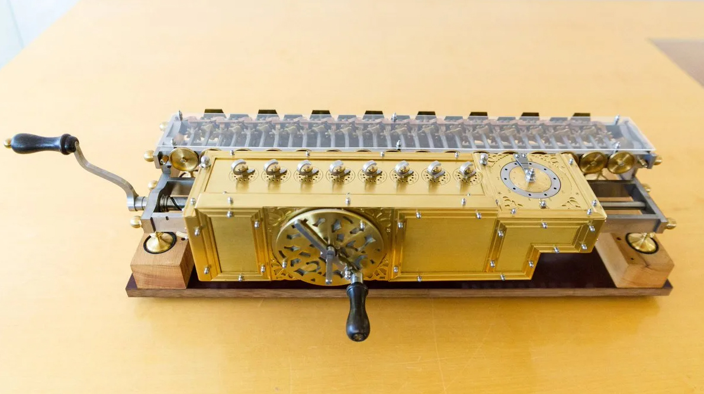Готфрид Вильгейм Лейбниц (1646–1716) в 1673 г. создал «ступенчатый вычислитель» – счетную машину, позволяющую складывать, вычитать, умножать, делить, извлекать квадратные корни. Машина работала с 12-разрядными числами. К зубчатым колесам Г. Лейбниц добавил ступенчатый валик, позволяющий выполнять умножение и деление.
НАЗАД
2.5 АРИФМОМЕТР К. ТОМАСА
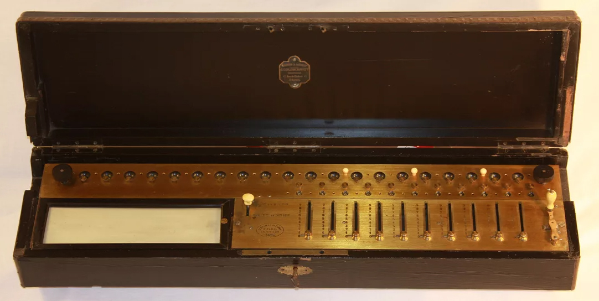Арифмометры обладали относительно неплохой скоростью вычислений. Они перемножали два восьмизначных числа за 18 с. При умножении использовался принцип Лейбница. Арифмометр также поставил мировой рекорд по продолжительности продаж: последняя модель была продана в начале XX в.
НАЗАД
2.6 АРИФМОМЕТР В. ОДНЕРА
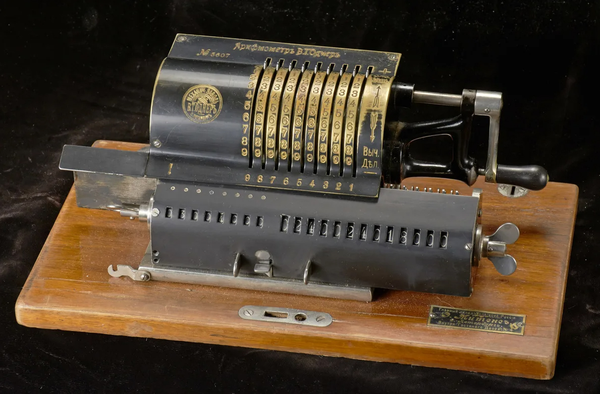Арифмометр В. Однера был построен на новых принципах. Главным его элементом является колесо Однера – зубчатка с переменным числом зубцов. Оно оказалось настолько совершенным, что не претерпело принципиальных изменений до наших дней. Так зародилась новая в России отрасль промышленности – производство вычислительных машин.
НАЗАД
2.7 МАШИНА П. ЧЕБЫШЕВА
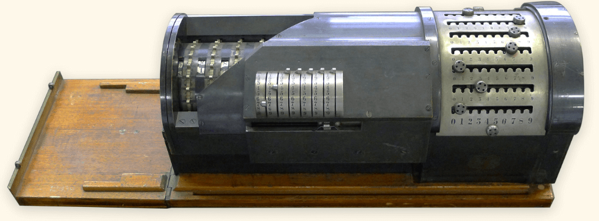В ее основу был положен изобретенный П. Чебышевым принцип «непрерывной передачи десятков». Суть этого принципа в том, что шестеренка единиц, делая полный оборот, поворачивает шестеренку десятков на 1/10 оборота, а шестеренку сотен – на 1/100 и т.д. Этим обеспечивается плавное изменение угла поворота всех вступающих во взаимодействие колес.
НАЗАД
2.8 ИДЕЯ ГЛУБОКОГО ПРОГРАММНОГО УПРАВЛЕНИЯ - ПЕРФОКАРТЫ Ж. ЖАККАРА
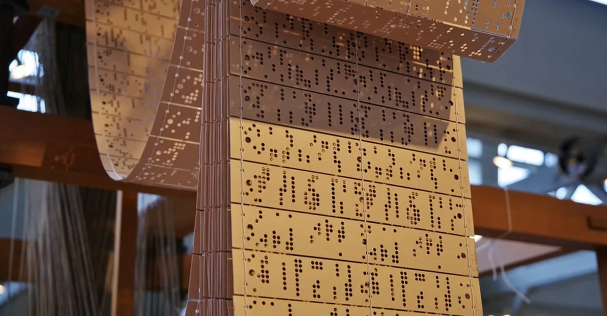Идея гибкого программирования механических устройств с помощью перфокарты впервые была реализована в ткацком станке Ж. Жаккара. После этого оставался только один шаг до программного управления вычислительными операциями. Французский ткач и механик Жозеф Жаккар создал первый образец машины, управляемой введенной в нее информацией.
НАЗАД
2.9 МАШИНЫ Ч. БЭББИДЖА
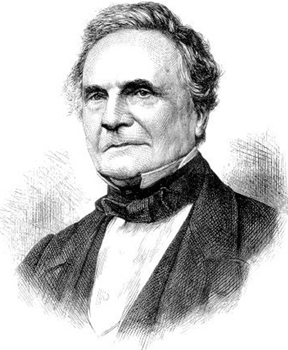Первое вычислительное устройство Бэббиджа получило название «разностная машина», поскольку работа модели была основана на хорошо разработанном методе конечных разностей. Разностная машина предназначалась для решения дифференциальных уравнений и табулирования многочленов. К 1834 г. Бэббидж задумал принципиально новое устройство – «аналитическую машину», явившуюся прообразом современных компьютеров. Особенность аналитической машины - в ней впервые был реализован принцип разделения информации на команды и данные.
НАЗАД
3. ЭЛЕКТРОМЕХАНИЧЕСКИЙ ЭТАП
Этот период был наименее продолжительным – с 1888 до 1945 г. Переход от регистрации перемещений к регистрации сигналов позволил значительно снизить габариты и повысить быстродействие. На пути к этому достижению потребовалось ввести несколько важных принципов. К ним относятся: двоичная система счисления и математическая логика Джорджа Буля.
НАЗАД
3.1 СЧЁТНО-ПЕРФОРАЦИОННАЯ ТЕХНИКА
Начиная с двадцатых годов ХХ в., применение счетно-перфорационной техники становится доминирующим направлением развития вычислительной техники. перфорационные машины по сравнению с арифмометрами имеют большую скорость и меньшую вероятность ошибок при вычислениях.
НАЗАД
3.2 «ИЗОБРЕТАТЕЛЬ КОМПЬЮТЕРА» К. ЦУЗЕ
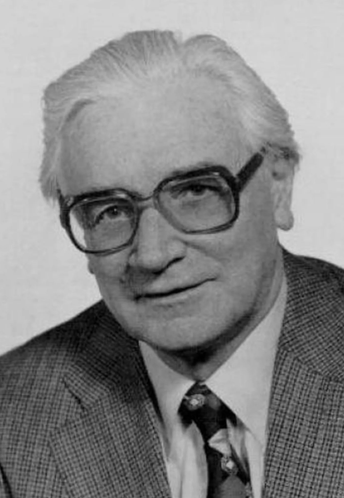
В 1934 г. К. Цузе придумал модель автоматического калькулятора, которая состояла из устройства управления, вычислительного устройства и памяти и полностью совпадала с архитектурой сегодняшних компьютеров.
Он первым в мире:
- показал, что обработка данных начинается с бита (бит он называл да/нет-статусом, а формулы двоичной алгебры – условными суждениями);
- ввел термин «машинное слово» (word);
- объединил в вычислителе арифметические и логические
операции
В 1937 г. К. Цузе создал работающую память для хранения 12 двоичных чисел по 24 бита.
НАЗАД
3.3 МАШИНЫ Г. ЭЙКЕНА
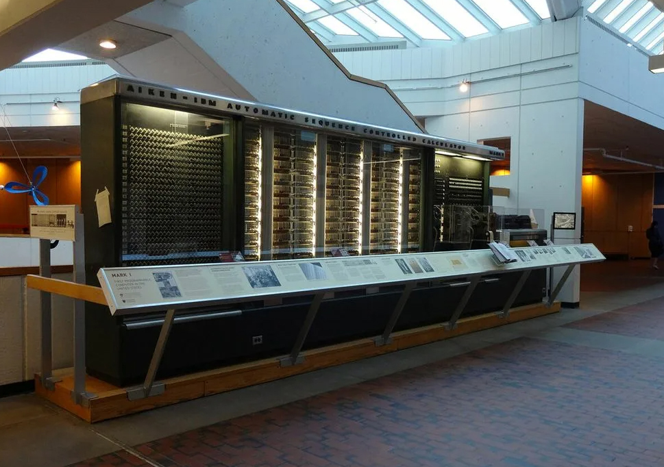В 1937 г. гарвардский математик Говард Эйкен предложил проект создания большой счетной машины. Спонсировал работу президент компании IBM T. Проектирование «Mark-1» началось в 1939 г., строило этот компьютер нью-йоркское предприятие IBM.
НАЗАД
4. ЭЛЕКТРОННЫЙ ПЕРИОД
Электронно-вычислительные машины появились, когда возникла острая необходимость в очень трудоемких и точных расчетах, особенно в таких областях, как атомная физика, теория динамик полета и управления летательными аппаратами.
4.1 МАШИНА ДЖ. АТАНАСОВА
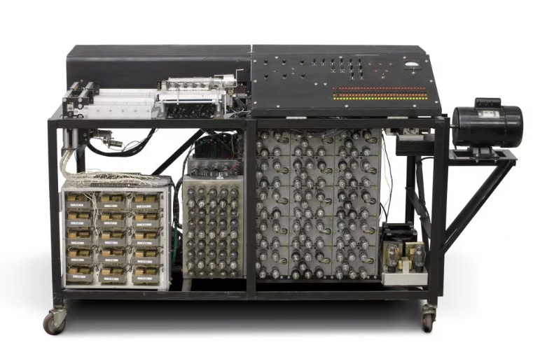
в 1939 г. Атанасов опубликовал окончательный вариант своей концепции современной вычислительной машины:
1) в своей работе вычислительная машина будет использовать электричество и достижения электроники;
2) ее работа будет основана на двоичной, а не на десятичной системе счисления;
3) основой запоминающего устройства послужат конденсаторы, содержимое которых будет периодически обновляться во избежание ошибок;
В 1939 г. Дж. Атанасов вместе со своим ассистентом построил и испытал первую вычислительную машину, предназначенную для решения систем линейных уравнений с тридцатью неизвестными. Они решили назвать ее АВС (Atanasoff Berry Computer)
НАЗАД
4.2 ЭВМ «АСЕ»
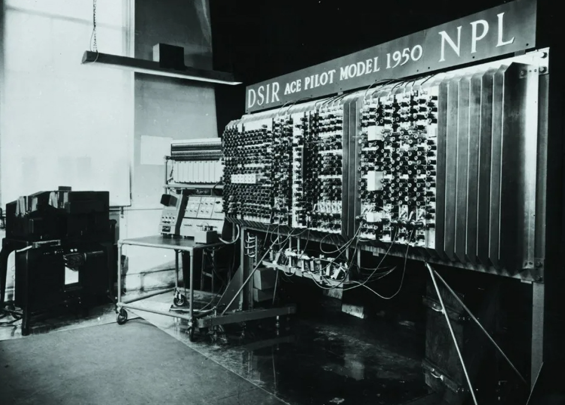Алан Тьюринг участвовал в послевоенные годы в создании мощного компьютера – машины с хранимыми в памяти программами, ряд свойств которой он взял от своей гипотетической универсальной машины. Опытный образец компьютера АСЕ (Automatic Соmputing Engine – автоматическое вычислительное устройство) вступил в эксплуатацию в мае 1950 г.
НАЗАД
4.3 ПОКОЛЕНИЯ ЭВМ
| Показатель | Поколения ЭВМ | ||||
|---|---|---|---|---|---|
| I | II | III | IV | V | |
| Элементная база | Электронно-вакуумные лампы | Транзисторы вместо электронных ламп | Микросхемы | Большие и сверхбольшие интегральные схемы | Сверхбольшие интегральные схемы, микропроцессоры |
| Быстродействие | 10–20 тысяч операций в секунду | До сотен тысяч операций в секунду | Миллионы операций в секунду | Миллиарды операций в секунду | Триллионы операций в секунду |
| Оперативная память | 2 Кбайта (2048 машинных слов) | Увеличилась до нескольких десятков килобайт | До нескольких мегабайт | До сотен мегабайт | Гигабайты и терабайты |
| Программирование | В машинных кодах, требовало глубокого знания архитектуры ЭВМ | Появились языки высокого уровня | Развитие языков высокого уровня, появление операционных систем | Развитие операционных систем, появление персональных компьютеров | Развитие искусственного интеллекта, нейронных сетей, параллельных вычислений |
| Габариты | Огромные | уменьшились, но оставались большими | Появились мини-ЭВМ | Значительно уменьшились, появились персональные компьютеры | Компактные, мобильные устройства |
| Примеры | ЭВМ «Энмак», «Эдсак», «Эдвак», «МЭСМ», «БЭСМ», «Стрела» | IBM 7000, «Минск», «Урал» | IBM System/360, «EC ЭВМ» (серия советских ЭВМ) | IBM PC, Apple Macintosh | Современные суперкомпьютеры, квантовые компьютеры, нейрокомпьютеры |
НАЗАД
ЗАКЛЮЧЕНИЕ
На протяжении всего шестидесяти пяти лет компьютеры превратились из диковинных электронных монстров в мощный, гибкий, удобный и доступный инструмент. Компьютеры стали символом прогресса. По мере того как человеку понадобится обрабатывать все большее количество информации, будут совершенствоваться и средства ее обработки – компьютеры; будут появляться новые языки программирования.